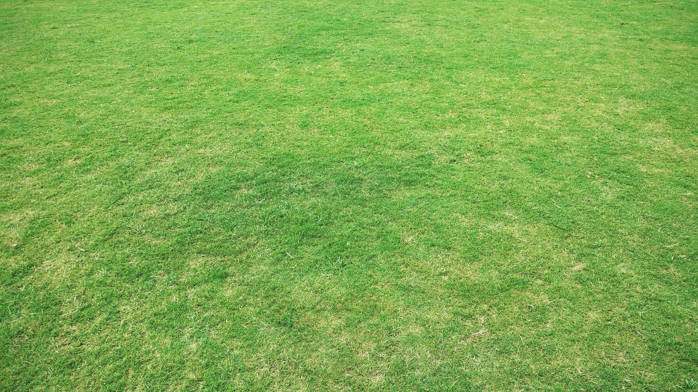

<html>

<head>
  <script src="https://aframe.io/releases/1.0.4/aframe.min.js"></script>
</head>

<body>
  <a-scene>

    <a-entity camera look-controls wasd-controls position="0 0 0">
      <a-entity cursor="fuse: true; fuseTimeout: 500" position="0 0 -1"
        geometry="primitive: ring; radiusInner: 0.02; radiusOuter: 0.03" material="color: black; shader: flat">
      </a-entity>
    </a-entity>
    
    <!-- logo -->
    <a-gltf-model cursor-listener src="assets/GLTF/Asset 1.gltf" class="logo" scale="1.1 1.1 1.1" rotation="0 -50 0 " position="0.01 0.01 -0.1" gltf-model=""></a-gltf-model>
    
    <a-gltf-model cursor-listener src="capi.gltf" scale="0.19 0.19 0.19" position="0.76599 0.01 -2.7842"
     class="capi" rotation="0 -4 0" animation__capi_move="dur: 1000;  property:  position; to:  13 0 0"></a-gltf-model>

    <!-- Hide on AR Mode by adding: hide-on-enter-ar -->
    <!-- <a-assets>
      
    </a-assets>
    <a-plane  hide-on-enter-ar src="#ground" height="100" width="100" rotation="-90 0 0" position="0.01 -0.03 0.01" scale="0.09 0.09 0.09"></a-plane>
    
    <a-assets>
      </a-sky>">
    </a-assets>
    <a-sky  hide-on-enter-ar src="#sky"></a-sky> -->

    
  </a-scene>

  <script>
    /**
     * Listening to the cursor & "clicked" objects
     */

    // VARS
    
    // const cactusSound = new Audio("sounds/mixkit-futuristic-engine-sounds-2738.wav");
    const capiSound = new Audio("sounds/mixkit-cow-dry-moo-1748.wav");
    const explositionSound = new Audio("sounds/mixkit-shatter-shot-explosion-1693.wav");
    const music = new Audio("sounds/snow-traprap-type-beat-quotguitarquot-278877.mp3");

    AFRAME.registerComponent('cursor-listener', {
      init: function () {
        this.el.addEventListener('click', function (evt) {
          console.log('I was clicked at: ', evt.detail.intersection.point);
          // CAPI
          if (this.getAttribute("class") == "capi") {

            explositionSound.pause();
            explositionSound.currentTime = 0;
            explositionSound.play();
            
            // ADD ANIMATION
            this.setAttribute("animation__box_move", "dur: 100;  property:  position; to:  13 0 0");
          }
          
        });
      }
    });
    const stage = document.querySelector("a-scene");
    
    // const parser = new DOMParser();
    // const newCapi = parser.parseFromString(capiCode, "text/xml");

    setInterval(() => {

      var radomRange = ((Math.floor(Math.random() * 2)) == 0) ? "-": "";

      var randoX = Math.random()*10;
      var capiCode = '<a-gltf-model cursor-listener src="capi.gltf" scale="0.19 0.19 0.19" position="'+ radomRange + randoX +' 0.01 -2.7842" class="capi" rotation="0 -4 0" animation__capi_move="dur: 10000;  property:  position; to:  0 5 0"></a-gltf-model>';
      var wrapper= document.createElement('div');
      wrapper.innerHTML= capiCode;
      var div= wrapper.firstChild;

      stage.appendChild(div);
    }, 3000);

    setTimeout(() => {
      music.play();
    }, 1000)
  </script>

</body>

</html>